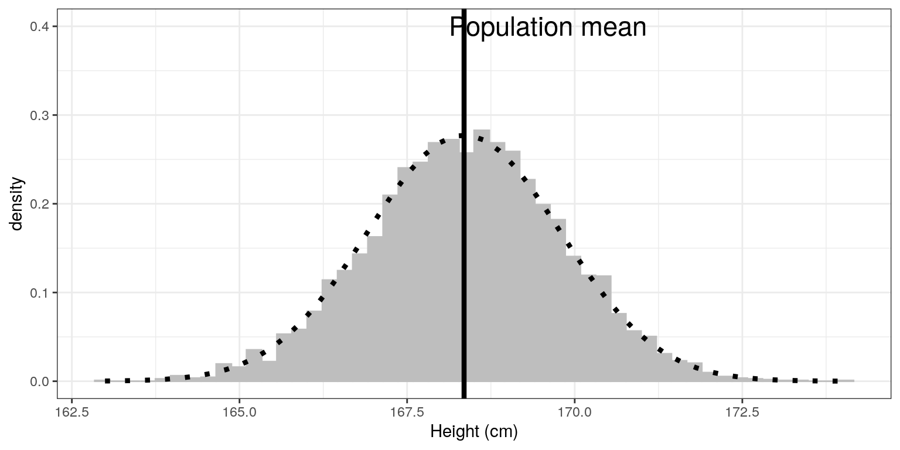
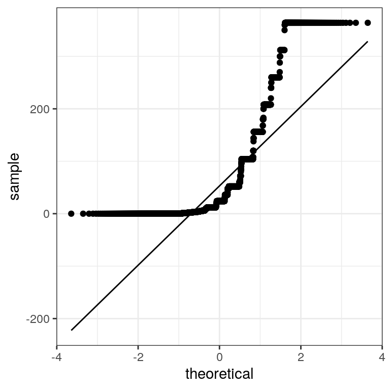
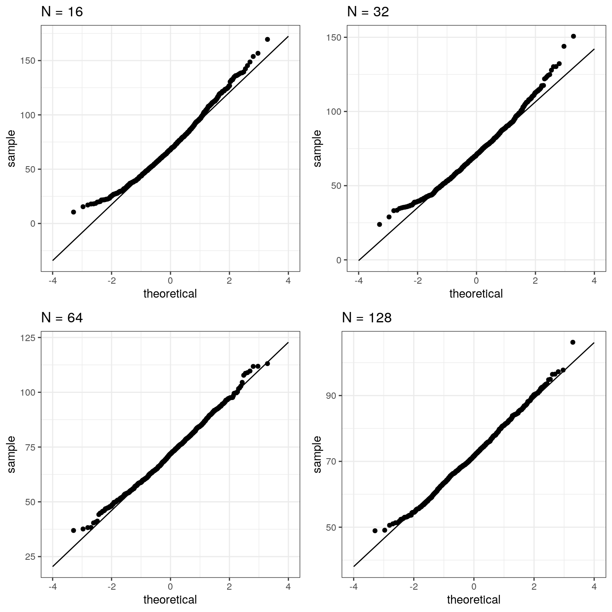

Chapter 6 Sampling in R
First we load the necessary libraries and set up the NHANES adult dataset
library(tidyverse)
library(ggplot2)
library(knitr)
library(cowplot)
set.seed(123456)
opts_chunk$set(tidy.opts=list(width.cutoff=80))
options(tibble.width = 60)
# load the NHANES data library
library(NHANES)
# create a NHANES dataset without duplicated IDs
NHANES <-
NHANES %>%
distinct(ID, .keep_all = TRUE)
#create a dataset of only adults
NHANES_adult <-
NHANES %>%
filter(
Age >= 18
) %>%
drop_na(Height)6.1 Sampling error (Section ??)
Here we will repeatedly sample from the NHANES Height variable in order to obtain the sampling distribution of the mean.
sampSize <- 50 # size of sample
nsamps <- 5000 # number of samples we will take
# set up variable to store all of the results
sampMeans <- tibble(meanHeight=rep(NA,nsamps))
# Loop through and repeatedly sample and compute the mean
for (i in 1:nsamps) {
sampMeans$meanHeight[i] <- NHANES_adult %>%
sample_n(sampSize) %>%
summarize(meanHeight=mean(Height)) %>%
pull(meanHeight)
}Now let’s plot the sampling distribution. We will also overlay the sampling distribution of the mean predicted on the basis of the population mean and standard deviation, to show that it properly describes the actual sampling distribution.
# pipe the sampMeans data frame into ggplot
sampMeans %>%
ggplot(aes(meanHeight)) +
# create histogram using density rather than count
geom_histogram(
aes(y = ..density..),
bins = 50,
col = "gray",
fill = "gray"
) +
# add a vertical line for the population mean
geom_vline(xintercept = mean(NHANES_adult$Height),
size=1.5) +
# add a label for the line
annotate(
"text",
x = 169.6,
y = .4,
label = "Population mean",
size=6
) +
# label the x axis
labs(x = "Height (cm)") +
# add normal based on population mean/sd
stat_function(
fun = dnorm, n = sampSize,
args = list(
mean = mean(NHANES_adult$Height),
sd = sd(NHANES_adult$Height)/sqrt(sampSize)
),
size = 1.5,
color = "black",
linetype='dotted'
) 
6.2 Central limit theorem
The central limit theorem tells us that the sampling distribution of the mean becomes normal as the sample size grows. Let’s test this by sampling a clearly non-normal variable and look at the normality of the results using a Q-Q plot. We saw in Figure ?? that the variable AlcoholYear is distributed in a very non-normal way. Let’s first look at the Q-Q plot for these data, to see what it looks like. We will use the stat_qq() function from ggplot2 to create the plot for us.
# prepare the dta
NHANES_cleanAlc <- NHANES %>%
drop_na(AlcoholYear)
ggplot(NHANES_cleanAlc, aes(sample=AlcoholYear)) +
stat_qq() +
# add the line for x=y
stat_qq_line()
We can see from this figure that the distribution is highly non-normal, as the Q-Q plot diverges substantially from the unit line.
Now let’s repeatedly sample and compute the mean, and look at the resulting Q-Q plot. We will take samples of various sizes to see the effect of sample size. We will use a function from the dplyr package called do(), which can run a large number of analyses at once.
set.seed(12345)
sampSizes <- c(16, 32, 64, 128) # size of sample
nsamps <- 1000 # number of samples we will take
# create the data frame that specifies the analyses
input_df <- tibble(sampSize=rep(sampSizes,nsamps),
id=seq(nsamps*length(sampSizes)))
# create a function that samples and returns the mean
# so that we can loop over it using replicate()
get_sample_mean <- function(sampSize){
meanAlcYear <-
NHANES_cleanAlc %>%
sample_n(sampSize) %>%
summarize(meanAlcoholYear = mean(AlcoholYear)) %>%
pull(meanAlcoholYear)
return(tibble(meanAlcYear = meanAlcYear, sampSize=sampSize))
}
# loop through sample sizes
# we group by id so that each id will be run separately by do()
all_results = input_df %>%
group_by(id) %>%
# "." refers to the data frame being passed in by do()
do(get_sample_mean(.$sampSize))Now let’s create separate Q-Q plots for the different sample sizes.
# create empty list to store plots
qqplots = list()
for (N in sampSizes){
sample_results <-
all_results %>%
filter(sampSize==N)
qqplots[[toString(N)]] <- ggplot(sample_results,
aes(sample=meanAlcYear)) +
stat_qq() +
# add the line for x=y
stat_qq_line(fullrange = TRUE) +
ggtitle(sprintf('N = %d', N)) +
xlim(-4, 4)
}
plot_grid(plotlist = qqplots)
This shows that the results become more normally distributed (i.e. following the straight line) as the samples get larger.
6.3 Confidence intervals (Section 9.1)
Remember that confidence intervals are intervals that will contain the population parameter on a certain proportion of times. In this example we will walk through the simulation that was presented in Section 9.1 to show that this actually works properly. Here we will use a function called do() that lets us